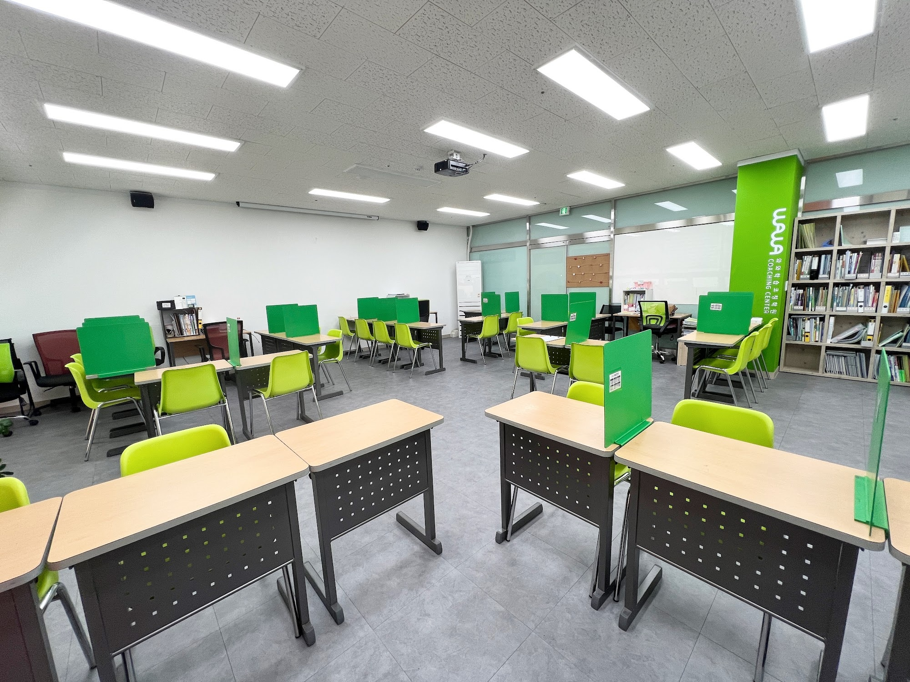
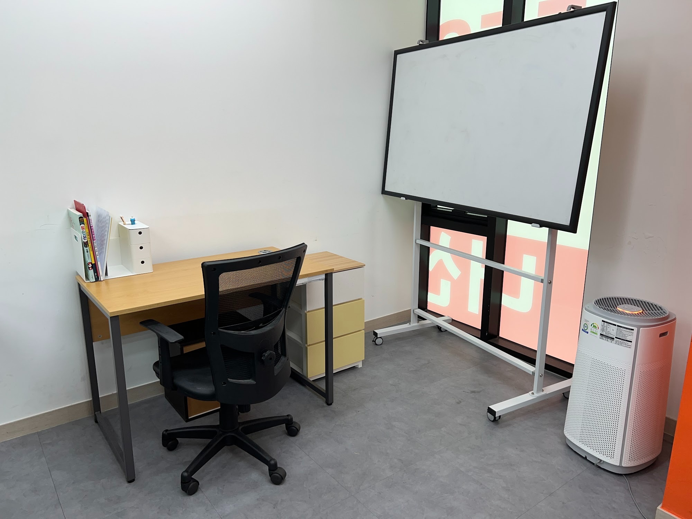
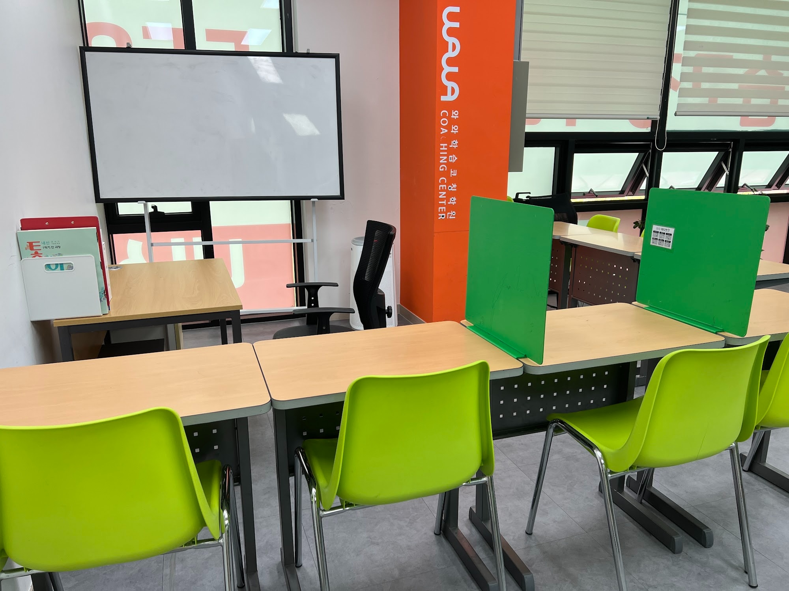
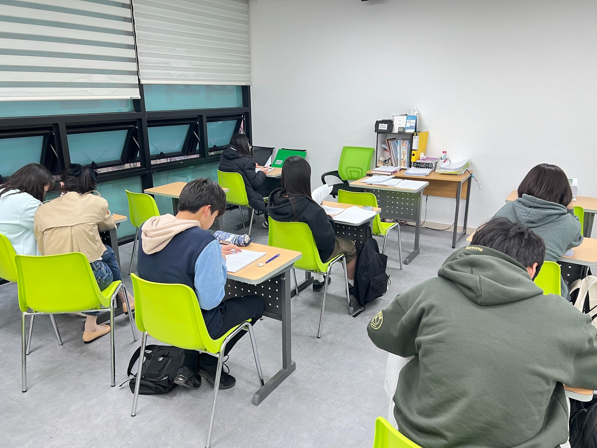

안녕하세요, 경기 남양주시 다산동의 와와학습코칭 다산지금점입니다. 다산지금로에 있는 센터로, 다산한강초등학교(다산한강초)와 다산한강중학교(다산한강중) 학생들이 가까이에서 오가는 다산신도시 동네에 자리하고 있습니다.
이번 글의 주제는 한 문장입니다. "답을 맞힌 것과, 그 답을 설명할 수 있는 것은 다르다." 다산지금점 교실 한쪽에 세워 둔 화이트보드가 왜 거기 있는지에 대한 이야기이기도 합니다.
"맞았는데요?" — 채점표에는 안 보이는 빈틈
문제집을 채점하면 동그라미가 가득한데, 막상 시험에서는 비슷한 문제를 놓치는 아이가 있습니다. 부모님이 보시기엔 이상한 일입니다. 분명히 풀 줄 알았으니까요.
이유는 대개 이렇습니다. 바로 앞에서 예제를 보고 풀이 순서를 따라 했기 때문에 맞힌 것이고, 왜 그 순서로 푸는지는 모르는 상태입니다. 숫자가 조금 바뀌거나 문제 모양이 달라지면 따라 할 틀이 사라집니다. 채점표에는 이 차이가 드러나지 않습니다. 동그라미는 '답이 맞았다'만 알려 줄 뿐, '이해했다'까지는 알려 주지 않기 때문입니다.
이 빈틈을 확인하는 가장 간단한 방법이 "이거 어떻게 풀었는지 나한테 설명해 줄래?"라는 질문입니다. 진짜로 이해한 아이는 서툴더라도 자기 말로 이유를 댑니다. 따라 푼 아이는 "그냥 이렇게 하는 거예요"에서 멈춥니다.

교실 한쪽의 화이트보드는 '선생님 칠판'이 아닙니다
위 사진은 다산지금점 교실 한쪽 코너입니다. 책상 하나, 의자 하나, 그리고 바퀴가 달린 커다란 이동식 화이트보드가 있습니다. 여러 명을 앞에 두고 강의하는 칠판이라기보다는 한 아이와 코치가 마주 서서 쓰는 크기입니다.
화이트보드는 공책과 쓰임이 다릅니다. 공책에는 혼자 풀고 덮으면 끝이지만, 보드 앞에 서면 누군가에게 보여 주면서 풀게 됩니다. 식을 한 줄 쓸 때마다 "여기서 왜 양변에 같은 수를 곱했지?", "이 문장에서 주어는 어디까지야?" 하는 질문이 자연스럽게 따라옵니다. 막히는 줄이 바로 그 아이가 모르는 지점입니다.
설명하는 공부는 거창하지 않습니다. 오늘 푼 문제 중 한두 개를 골라, 보드에 풀이를 다시 쓰면서 소리 내어 이유를 말해 보는 것입니다. 3분이면 끝나지만, 채점만 했을 때는 보이지 않던 것이 드러납니다.
설명이 막히는 곳은 과목마다 다릅니다
- 초등 고학년 수학 — 분수의 나눗셈에서 "왜 뒤집어서 곱해요?"라고 물으면 멈추는 아이가 많습니다. 계산은 되는데 이유가 없으면, 중학교 문자와 식에서 같은 자리에서 다시 흔들립니다.
- 중학교 수학 — 방정식을 풀 때 "이항한다"는 말은 하는데, 등식의 성질로 설명하지 못하면 부등식에서 부호가 바뀌는 이유를 놓칩니다.
- 영어 — 해석은 맞게 했는데 "이 문장의 동사는 어디야?"에 답하지 못하면, 문장이 길어지는 순간 해석이 무너집니다.
- 국어·사회·과학 — 서술형 답을 말로는 하는데 쓰지 못한다면, 핵심 단어를 골라 두 문장으로 정리하는 연습이 필요하다는 신호입니다.
설명해 보라고 했을 때 막히는 지점이 곧 다음에 복습할 곳입니다. 그래서 설명하기는 '평가'가 아니라 '다음 할 일을 찾는 과정'으로 쓰는 편이 좋습니다. 틀려도 괜찮고, 막혀도 괜찮습니다. 어디서 막혔는지만 알면 됩니다.

설명은 짧게, 혼자 푸는 시간은 조용하게
설명하는 시간만 길어지면 정작 문제를 푸는 양이 줄어듭니다. 그래서 다산지금점의 교실은 두 가지 모습이 함께 있습니다. 한쪽에는 보드와 코치 책상이 있고, 나머지 넓은 공간에는 초록 가림판이 달린 책상이 줄지어 있습니다.
가림판은 옆 친구와 시선을 나눠 줍니다. 다른 아이가 몇 쪽까지 풀었는지 신경 쓰지 않고 자기 교재에만 머물 수 있게 하는 장치입니다. 설명하기에서 찾은 약한 부분은 결국 혼자 비슷한 문제를 여러 개 풀어 보는 시간이 있어야 내 것이 됩니다. 짧게 설명하고, 길게 혼자 풀고, 다시 짧게 확인하는 흐름입니다.

위 사진은 자습 시간의 모습입니다. 같은 교실에 앉아 있어도 각자 앞에 놓인 것은 자기 학습지입니다. 교실 안쪽에는 코치 책상이 있어, 혼자 풀다 막힌 부분은 그 자리에서 짧게 확인하고 다시 자기 문제로 돌아갑니다.
집에서 해 볼 수 있는 '설명해 보기' 세 가지
- 동그라미 받은 문제 하나 물어보기 — 틀린 문제가 아니라 맞힌 문제를 골라 "이건 어떻게 풀었어?"라고 물어 주세요. 맞힌 문제에서 설명이 막히면, 다음에 틀릴 가능성이 큰 문제입니다.
- 부모님이 모르는 척하기 — "엄마는 이거 잊어버렸는데 알려 줄래?"라고 하면 아이는 가르치는 입장이 되어 훨씬 적극적으로 말합니다. 정답을 고쳐 주기보다 끝까지 들어 주시는 것이 좋습니다.
- 설명을 두 문장으로 줄이기 — 길게 말했다면 "그걸 두 문장으로 줄이면?"이라고 한 번 더 물어 주세요. 핵심만 남기는 연습이 중학교 서술형 답안 쓰기로 이어집니다.
다산지금점 찾아오시는 길
와와학습코칭 다산지금점은 경기 남양주시 다산지금로 139, 3층 308·309호에 있습니다. 다산한강초등학교와 다산한강중학교 학생들이 가까이에서 오갈 수 있는 곳입니다.
학습 진단과 상담은 무료입니다. 아이가 최근에 푼 문제집 한 권을 들고 오셔서, 동그라미 받은 문제 하나를 함께 설명해 보는 것부터 시작하셔도 좋겠습니다.